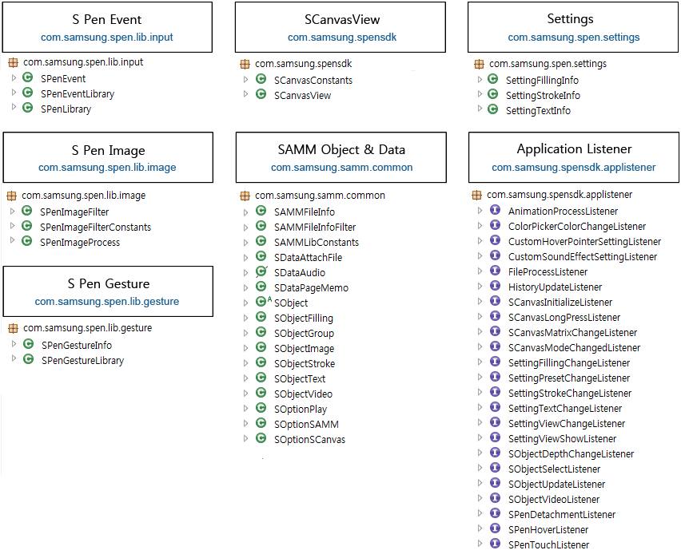

Caution.
The current version of the SDK is optimized for the Galaxy Note with S Pen capability.
To promote users' convenience, you may add this message, "This application is optimized for Galaxy Note" upon registering the application in the Android Market and Samsung Apps.
Developing Applications Without the S Pen SDK.
S Pen uses the same event processing method as the Touch feature, you can use touch event handles instead of the SDK to develop S Pen applications. (In case your application requires a special pen type aside from ones provided by the SDK, etc.)
Version Information : v2.3
Miscellaneous.
a. For Android Ice Cream Sandwich (ICS), you need to add <application ... android:largeHeap="true"> as a tag option in the manifest file in order to avoid the lack of memory.For inquiries about using this API, visit http://developer.samsung.com/android
Updated: 2013-02-27